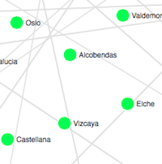

Análisis de los 50 tomos publicados sobre la Operación Púnica mediante modelos basados en tópicos y representación vectorial de las palabras.
Empresas
Conexiones entre empresas.
Ver
Personas
Conexiones entre personas.
Ver

Lugares
Conexiones entre lugares.
Ver
Tópicos
¿Qué temas se tratan? ¿Cómo se distribuyen entre los tomos?.
Ver
Relaciones
Encuentra términos relacionados utilizando el modelo vectorial Word2Vec.
Ver
OEG
Ontology Engineering Group
Ver